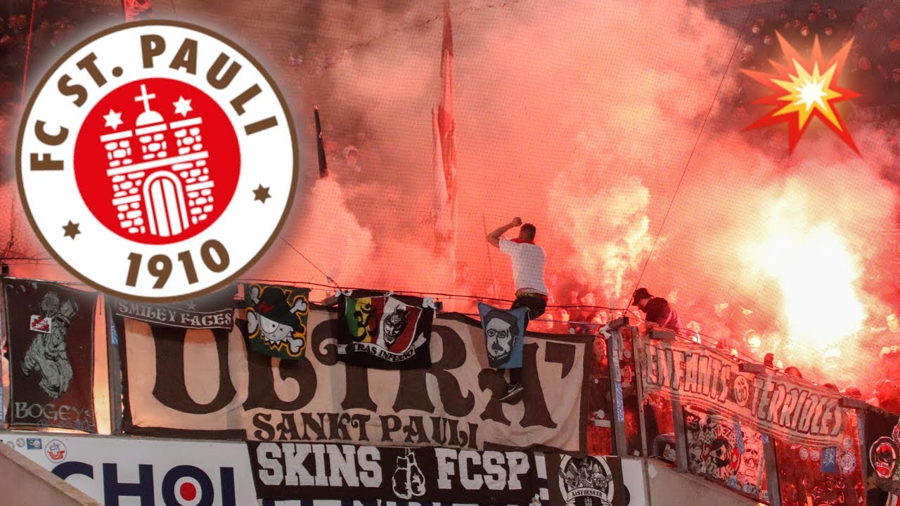
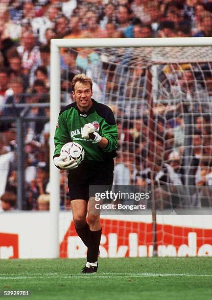

Der FC St. Pauli ist ein traditionsreicher Fußballverein aus Hamburg, der 1910 gegründet wurde und im Stadtteil St. Pauli beheimatet ist. Seine Heimspiele trägt der Club im Millerntor-Stadion aus, das für seine besondere Atmosphäre bekannt ist. Im Laufe der Jahrzehnte hat der Verein viele Höhen und Tiefen erlebt, darunter Auf- und Abstiege zwischen verschiedenen Ligen. Besonders in 1980er- und 1990er-Jahren entwickelte sich rund um den Verein eine einzigartige Fankultur, die weit über den Fußball hinaus Bedeutung gewann. Heute steht St. Pauli nicht nur für sportlichen Wettbewerb, sondern auch für eine klare Haltung in gesellschaftlichen Fragen.
Was den FC St. Pauli so besonders macht, ist seine starke Identität und die enge Verbindung zu seinen Fans. Der Verein setzt sich aktiv für Werte wie Toleranz, Vielfalt und Antirassismus ein, was ihn von vielen anderen Clubs unterscheidet. Die Fanszene gilt als eine der kreativsten und engagiertesten im Fußball, was sich in Choreografien, Gesängen und sozialen Projekten widerspiegelt. Außerdem steht St. Pauli für eine alternative, offene Fußballkultur, die Menschen aus unterschiedlichsten Hintergründen zusammenbringt. Genau das macht den Verein für viele Menschen weltweit so sympahtisch und cool.

